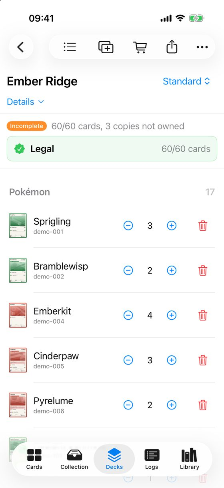
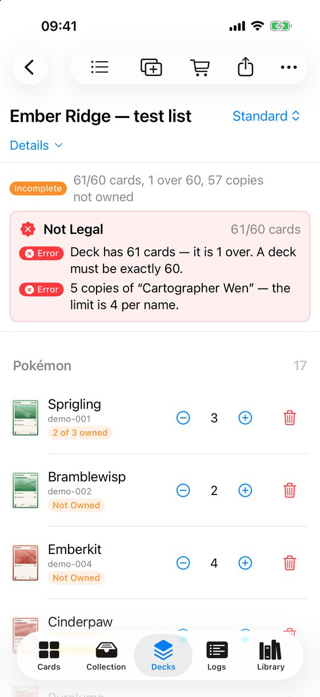
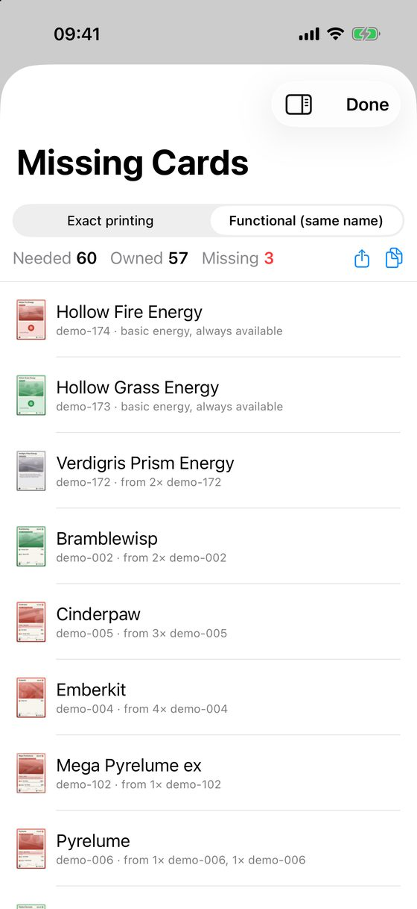
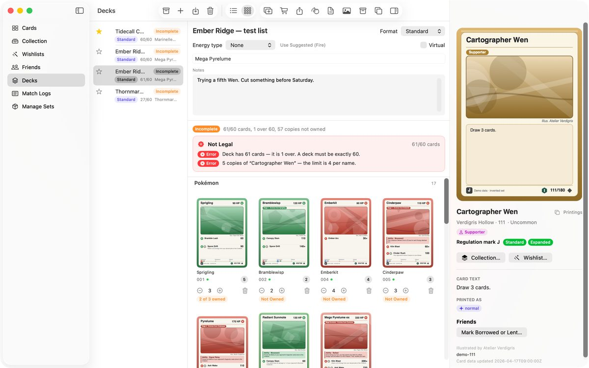

Build a deck and check it
A deck in Deck & Collect knows what you own. It shows how many of its cards you have, which you are missing, and whether it follows the rules.
Make a deck
- Go to Decks and tap New Deck (the + button).
- Type a Deck Name and choose a Format, then tap Create.
- Tap Add Cards. Search for a card and add it. Tap again for more copies.
- Use the − and + buttons on each row to change the number of copies.
Or import a deck from Pokémon TCG Live
- In Pokémon TCG Live, open the deck and choose Export. The list is now on your clipboard.
- In Deck & Collect, go to Decks and tap Import Deck.
- Paste the list. The preview fills in with the cards it matched.
- Lines the app cannot match are listed under Not Matched, with the reason. Usually the set is not added yet. Add it in Manage Sets and paste again.
- Check the name and the format, then tap Import.
To copy a deck back out, open it and tap Export. The list is copied, ready to paste into Pokémon TCG Live. Lists from Limitless paste in the same way.
What the deck tells you


- Legal or Not Legal. If it is not legal, the red box lists each problem, for example a card count that is not 60, or more than four copies of a card name. The check follows the format you chose.
- Complete means you own every card in it. Incomplete means some copies are missing, as in 60/60 cards, 3 copies not owned.
- A row says Not Owned, or for example 2 of 3 owned, so you see which cards to find.
Why a deck says "not owned" for a card I have
Each copy you own belongs to one real deck at a time. If a card is already in another deck, your copies stay with that older deck, and the new deck shows the card as missing. If the new deck is only an idea, turn on Virtual in the deck editor. A virtual deck holds none of your copies.
See what you are missing
- Open the deck and tap Missing Cards. It lists what you need, what you own and what is missing.
- To put the missing cards on a wishlist, see Wishlists.

On iPad and Mac
The deck list, the deck and the selected card's details sit side by side.

More you can do with a deck: Opening Hand shows your chances of a good start, Image saves a picture of the whole deck, and Switch Printing… swaps a card for a printing you own. For paper copies, see Print a wishlist or a deck list.